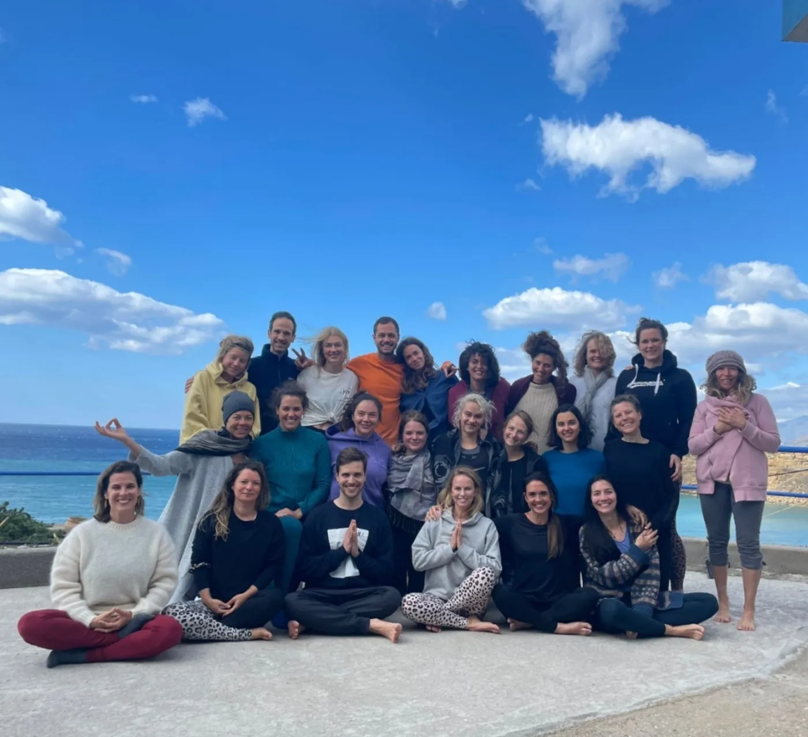
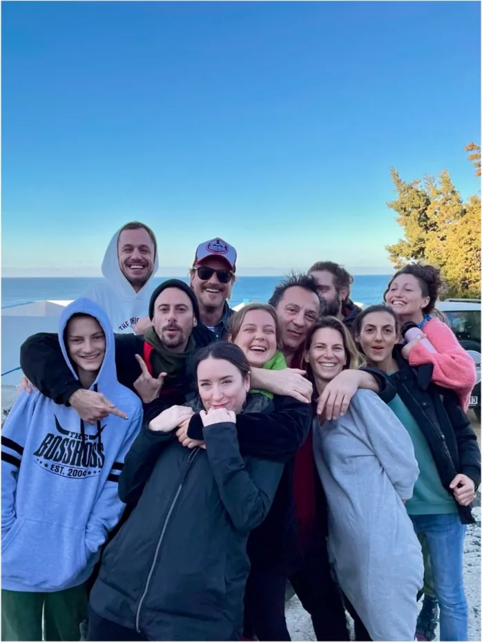
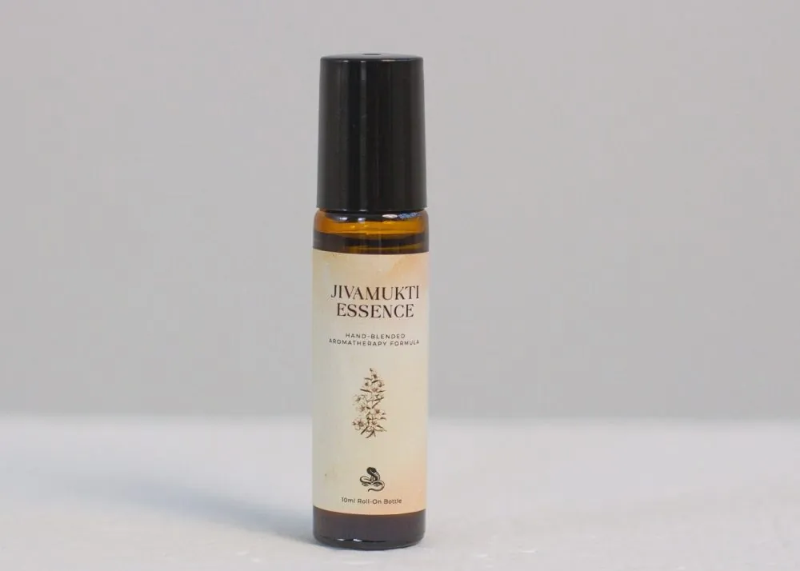
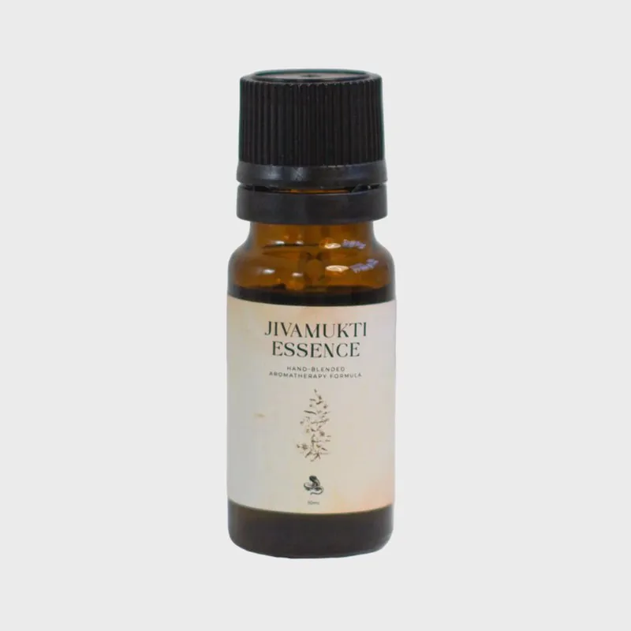

The story of the Jivamukti Essence
An unexpected encounter, a seed planted in an ashram, and twelve essential oils coming together to tell the story of Jivamukti Yoga.

Crete, February 2022
In February 2022, I had the opportunity to join the Jivamukti Ashram on the magical island of Crete, organised by Petros. At that time I was already hungry for travelling and longing to experience life in a community, surrounded by nature, once again.
I didn’t know what to expect. I had never been to Greece before, and I didn’t know much about Jivamukti either. But something inside me simply knew I had to go.
Thanks to Katherine’s kindness and open mind, I was also given the opportunity to participate as a therapist and share my aromatherapy magic with the community.
As the days passed, I slowly settled into the rhythm of the ashram and got to know the team, the volunteers, the teachers and the guests. Some had already been there for three months when I arrived, yet they welcomed me with open arms and open hearts. Within just a few days, I felt at home. We had become a little family, living in paradise together during such chaotic times.
There was something incredibly special about that place. We were free, present and full of love. Our inner children were finally allowed to come out and play again. We laughed, explored, practised, shared and simply enjoyed being alive.
I wanted to give something back to the people who were working so tirelessly, volunteering, teaching and holding space for everyone else. I had recently learned a new massage technique and was developing my Anahata treatment — a heart-opening, holistic aromatherapy facial — so I decided to offer a complimentary session to every team member, teacher and volunteer.
I transformed one of the rooms into a little pop-up therapy space, created an altar and began my treatments.
Emma Henry, who had arrived from London to teach us, was the first person to experience Anahata. We connected immediately on such an honest and joyful level. Experiencing her yoga classes, I felt equally at ease. I remember thinking that I was exactly where I was supposed to be.
Through these treatments, I was able to introduce Annalisa, Annabelle, Steffi, Larissa, Katherine, Regine, Alice, Judith and, later, many of the wonderful guests to the magic of aromatherapy.
It was beautiful to experience once again the power of plants and loving touch, especially within a community where people felt safe enough to be vulnerable, open-minded and receptive.
Sometimes, all we need is a little space to receive after spending so much time giving.
And sometimes, the most meaningful things begin when we simply allow ourselves to give without expecting anything in return.
The seed that was planted

During the final week of the ashram, Camilla Veen and Moritz Ulrich arrived to teach us, bringing with them their beautiful energy and immense knowledge.
Naturally, I offered them the Anahata treatment as well. They both enjoyed it so much that they booked a second session during their stay.
And it was during that second treatment with Camilla that something extraordinary happened. The seed of what would eventually become the Jivamukti x templeofsun collaboration was planted.
We both experienced a feeling that is difficult to put into words. It was almost as if we were floating in a state of Samadhi, immersed in Ananda — bliss. There was a sense of connection, stillness and something much bigger than either of us could consciously explain.
I didn’t know what would come out of that experience. I had no plan, no clear vision and no idea what shape it might eventually take. But deep down, I felt that something meaningful had begun.
Weeks passed, and eventually we all returned to our everyday lives. Yet we carried something precious with us: the love, hope and sense of togetherness we had cultivated in the ashram.
A year later, when the idea finally became clear to me, I sent Camilla a video message explaining my vision for an aromatherapy collaboration between Jivamukti and templeofsun. Her response was just as kind, open and supportive as I had hoped.
And so, a little seed planted in Crete began to grow.
The vision: the soul of Jivamukti in a vial
My idea was to create the ultimate Jiva formula — an aromatherapy blend that could capture the philosophy, teachings, energetics and spirit of the Jivamukti community.
I wanted to translate something as vast and alive as the Jivamukti journey into the language of plants. To create a scent that would tell a story without words. Something that could carry the essence of a community, a philosophy and a way of living.
The soul of Jivamukti, represented by magical aromatic plants.
For me, aromatherapy has always been about so much more than smelling beautiful. It is a way of connecting with nature, with ourselves and with the subtle layers of our inner world. Scent can evoke memories, awaken emotions and bring us back to a particular feeling or experience in an instant.
This is also what makes a personalised aromatherapy formula so meaningful.
Imagine being a yoga teacher and welcoming your students into the studio with a scent that becomes part of the experience you create together. Over time, that aroma can become associated with the feeling of your classes — the sense of safety, connection, inspiration and belonging.
Later, when your students encounter the same scent at home, during meditation or in the middle of a difficult day, it may bring them back to that feeling. Back to their practice. Back to the community they are part of.
An invisible bond is created, one that extends beyond the yoga mat.
For me, this is what it is all about: community, self-care, support, love and the beautiful reminder that we are not alone on this journey.
The alchemy of Jivamukti Essence

Once the idea began to take shape, I asked Camilla to share a collection of words and sentiments that represented Jivamukti for her. I wanted to understand the spirit of the community from within before beginning the alchemical process.
The words that guided me were:
Radical. Wild. Activism. Truth. Colour. Playfulness. Avant-garde. Ethics. Compassion. Liberation. Devotion. Love. Transformation. Unity.
Each word became a doorway into the world of plants.
I also drew from my own experiences in the ashram, the intuitions I had gathered there and the impressions that had stayed with me long after returning home. I revisited the five tenets of Jivamukti Yoga, allowing their philosophy to inform the composition.
I won’t reveal all my secrets as an alchemist, of course. Some things are better left to the magic of the process. But I can share a few of the inspirations that guided me.
One of them was the number eight, which holds special significance in connection with Krishna. This led me towards the symbolism of infinity and the peacock, whose beautiful blue-green colours immediately brought me to Anahata, the heart chakra and centre of compassion.
Jasmine, traditionally associated with Krishna, became one of the ingredients I was happy to reveal. From there, another magical plant connected to Krishna in Indian mythology found its way into my thinking.
Numerology also played a part. Jivamukti was founded in 1984, a year whose numbers reduce to 22/4, and I wanted to honour that symbolism within the creation of the formula.
Alongside these inspirations, I worked with the chakra system, considering how the ingredients could represent and connect with the different energy centres of the body.
And so the alchemy unfolded. The plants seemed to have a will of their own. At times, it felt as though they were practically screaming at me: “Me! Me! Me! Blend us together!”
The process was complex, intuitive, surprising and, at times, completely mind-blowing. I followed the threads of philosophy, symbolism, scent and sensation until the different elements began to come together.
The final formula brings together twelve essential oils, each representing a different aspect of the journey and philosophy of Jivamukti Yoga.
The result is fruity, spicy and earthy, yet somehow ethereal. A scent with layers to discover, revealing different facets of itself as you spend time with it.
I am incredibly proud of this formula and deeply grateful to be able to share it. But most of all, I am excited for the journey each of you will have with it. Because a scent can be created with a particular intention, but the experience of it is always personal.
Anahata, Shiva consciousness and the power of love
The finished Jivamukti Essence carries a light blue-green colour, inspired by Anahata, the heart chakra and the centre of compassion.
But there is another energy woven into its story: Shiva consciousness.
The teachings of Lord Shiva provided some of my main directions throughout the alchemical process. They invited me to explore transformation, liberation and the understanding that there is nothing to fear in our most authentic existence.
Beneath all our layers, expectations and stories, there is something beautifully simple.
Your bare, naked existence is pure love.
You are fierce. You are radiant. You are powerful. But most importantly, you are a compassionate being of light.
There is a lot of movement within this formula, and my intention was to create something that invites movement within you, too. Something that can accompany you through change, encourage you when you feel stuck and gently support you when you are ready to let go.
The flowers within the blend symbolise a kind of love that goes beyond the romantic idea of being loved.
Not in a romantic way. Wildly.
The kind of love that reminds you of your own strength, reconnects you with your playful side and gives you permission to be fully yourself.
And when life gets stormy, may this little bottle remind you that you have the strength to stand tall — and that you don’t have to navigate every storm alone.
How to work with your Jivamukti Essence

I always encourage people to approach aromatherapy with curiosity rather than expectation. You don’t need to understand everything you experience, and there is no right or wrong way to feel about a scent.
Give yourself a little space. Slow down. Breathe. Listen.
Create your own daily ritual
When you first receive your Jivamukti Essence, I invite you to sit down with it rather than simply rushing to use it.
For the pure essential oil blend, place 1–2 drops into your palms, rub them together gently, close your eyes and inhale slowly and rhythmically five to seven times. If you have the roll-on version, apply it to your pulse points and take a few mindful breaths.
Then simply observe. What does the scent bring up for you? Where does it take you? What does it reveal about your inner world today?
You might find that it energises you, brings a sense of calm or reconnects you with a feeling you had almost forgotten. On another day, the experience may be completely different. Allow it to change with you.
You can create this ritual in the morning, before meditation, ahead of your yoga practice or in the evening when you want to reconnect with yourself after a busy day.
Bring the Jivamukti spirit into your practice
If you are a yoga teacher, the Essence can become a beautiful sensory element of the space you hold for your students.
You might choose to introduce the scent before meditation, allowing everyone a moment to pause and arrive in the present. Used thoughtfully, it can become a familiar part of your classes, helping students associate the aroma with their practice and the sense of connection they experience together.
You can also explore the roll-on as a personal ritual, applying it to selected pulse points or chakra centres as part of your own practice.
If you run a yoga studio, you might consider introducing the scent at reception or in an appropriate shared space, creating a distinctive aromatic welcome for your community.
For any shared use, always consider individual sensitivities and obtain consent before offering the scent directly to students. Follow the product’s safety instructions and use only the appropriate amount for your setting.
Choose the version that speaks to you
Jivamukti Essence is available in two forms, each offering a slightly different experience. Both are sold through Jivamukti’s own European shop.
The pure essential oil blend is the more concentrated version. Its twelve essential oils come together in a complex aromatic composition designed for mindful inhalation and appropriate diffuser use.
The roll-on is a softer, more subtle interpretation of the original blend. The essential oils are diluted in organic jojoba oil, creating a natural botanical perfume that can be applied to the pulse points and enjoyed throughout the day.
Although both versions share the same twelve-ingredient concept, the roll-on has its own character, shaped by the principles of botanical perfumery.
Whichever version you choose, I invite you to make it your own. Let it become a small reminder of your practice, your intentions and the connection you share with the world around you.
Please read all product precautions before use. Never ingest either formula. Do not use during pregnancy or if you have epilepsy. The pure essential oil blend is highly concentrated and should be used according to its specific safety instructions; do not apply it undiluted to the skin. Perform a skin-sensitivity test before topical use, and be aware of the product’s phototoxicity: avoid direct sunlight and UV exposure on treated skin for eight hours. Do not diffuse around children under six or people with epilepsy-related sensitivities. Follow the label instructions for dilution and use.
A little about the person behind templeofsun
If we haven’t met yet, I’m Péter Frák, the person behind templeofsun.
I am a certified aromatherapist, Ayurvedic massage therapist, energy healer and meditation teacher. But if you ask me who I am beyond my professional titles, I’d probably say I’m a healer, storyteller, plant-lover, love-seeker and peace-maker.
My journey didn’t begin in the world of healing.
I was born in Hungary and spent seven years working in the fashion industry, including as head booker at Attractive, one of Hungary’s leading modelling agencies. I worked with Glamour Hungary and gradually moved into different creative roles, from managing teams and art direction to working as a fashion stylist and editor.
Throughout those years, spirituality and different forms of healing were already part of my life. Eventually, however, I could no longer ignore the calling to explore them more deeply.
In 2017, I discovered aromatherapy and fell completely in love with it. What began as a fascination soon became my ultimate passion and the path I wanted to follow in this lifetime. The longer version of that story is in my story.
The beginning of another journey
Looking back, I often think about that February in Crete, the little therapy room, the altar I created, the people who became family and the treatment that planted a seed neither Camilla nor I could fully understand at the time.
I couldn’t have planned the Jivamukti Essence. It emerged from a moment of connection, from the willingness to give and receive, and from allowing something beautiful to unfold without knowing exactly where it would lead.
Perhaps that is what I love most about this collaboration. It reminds me that the most meaningful creations are not always born from a carefully constructed plan. Sometimes they begin with an open heart, a moment of stillness and a feeling we cannot quite explain.
Then we follow that feeling, one step at a time, until it becomes something we can share with others.
Jivamukti Essence is my way of honouring the experience we shared in Crete and translating the spirit of that community into the language of plants. It is an invitation to reconnect with your practice, your inner wildness, your compassion and the love that exists beneath everything else.
I am so excited for you to experience it. May it meet you wherever you are on your journey. May it remind you of your strength when you need courage, offer a little softness when you need rest, and bring you back to the joy of being alive.
And above all, may it remind you that we are all connected.
May all beings be happy and free.
Namaste,
Péter aka templeofsun
The full collaboration page, with the plants and the safety notes, is here. The Essence is sold through Jivamukti’s European shop.